Neural Networks
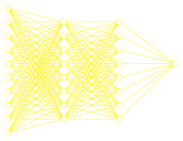The problem
| Age | BodyMassIndex | BloodPreassure | Cholesterol | BloodSugar |
|---|---|---|---|---|
| 0.038 | 0.062 | 0.022 | -0.003 | -0.018 |
| -0.002 | -0.051 | -0.026 | -0.039 | -0.092 |
| 0.085 | 0.044 | -0.006 | -0.003 | -0.026 |
| -0.089 | -0.012 | -0.037 | 0.034 | -0.009 |
| 0.005 | -0.036 | 0.022 | -0.003 | -0.047 |
| -0.093 | -0.041 | -0.019 | -0.076 | -0.096 |
| -0.045 | -0.047 | -0.016 | -0.039 | -0.038 |
| 0.064 | -0.002 | 0.067 | 0.018 | 0.003 |
| DiseaseProgression |
|---|
| 151.0 |
| 75.0 |
| 141.0 |
| 206.0 |
| 135.0 |
| 97.0 |
| 138.0 |
| 63.0 |
Task: predict disease progression (target) from age, body mass index, blood preassure, ... (features)
Workflow
| \(x_1\) | \(x_2\) | \(x_3\) | \(x_4\) | \(x_5\) |
|---|---|---|---|---|
| 0.038 | 0.062 | 0.022 | -0.003 | -0.018 |
| -0.002 | -0.051 | -0.026 | -0.039 | -0.092 |
| 0.085 | 0.044 | -0.006 | -0.003 | -0.026 |
| -0.089 | -0.012 | -0.037 | 0.034 | -0.009 |
| 0.005 | -0.036 | 0.022 | -0.003 | -0.047 |
| -0.093 | -0.041 | -0.019 | -0.076 | -0.096 |
| -0.045 | -0.047 | -0.016 | -0.039 | -0.038 |
| 0.064 | -0.002 | 0.067 | 0.018 | 0.003 |
| \(\hat y\) |
|---|
| 15.3 |
| 55.4 |
| 121.9 |
| 199.0 |
| 105.0 |
| 77.0 |
| 38.5 |
| 62.9 |
| \(y\) |
|---|
| 151.0 |
| 75.0 |
| 141.0 |
| 206.0 |
| 135.0 |
| 97.0 |
| 138.0 |
| 63.0 |
Loss: compares true value \(y\) with predicted value \( \hat y \)
Training: Adjust model parameters to minimize loss
Linear regression
Linear regression (1d)
-
Specify model (for sample \(i\)):
\( \hat y_i = W x_{i} \) - Specify Loss
\( \mathcal L = \frac{1}{N} \sum_{i=1}^N (y_i - \hat y_i)^2 \) - Find weights that minimize Loss
- Compute gradient
\( \mathcal L' = -\frac{2}{N} \sum_i (y_i-Wx_i)x_i \) - Find minimum
\( W^* = \frac{\sum y_i x_i }{\sum x_i^2} \)
Linear regression
- In this case: training = pen + paper!
- Analytical solution
- Prediction: \(\hat y = W^* x\)
- \( \hat y_i = W_1 x_{1, i} + W_2 x_{2, i} + \dots W_n x_{n, i} \)
- As Matrix notation the analtical solution is
- \( \mathcal L' = -\frac{2}{N} x^T(y- xW) \)
- \( W^* = (x^Tx)^{-1}x^Ty \)
- In principle computing gradients is always possible.
- But finding the root is not always possible analytically.
Numerical optimization
Pick \(x_0\)
Step size \(\ell\)
\(x_1 = x_0 - \ell f'(x_0)\)
...
\(x_{n+1} = x_n - \ell f'(x_n)\)
... until convergence
"Gradient Descent"
This works in any dimension
 
Contour plot
Pick \(x_0\)
\(x_1 = x_0 - \ell f'(x_0)\)
\(x_2 = x_1 - \ell f'(x_1)\)
... until convergence
Linear regression as Neural Network
Use optimizer to determine {W, b}
\( \hat y_i = W_1 x_{1,i} + W_2 x_{2,i} + W_3 x_{3,i} + b\)
for sample \(i\) out of \(N\)
Loss
\( \mathcal L = \frac{1}{N}\sum_i^N (y_i - \hat y_i)^2 \)
Add layer
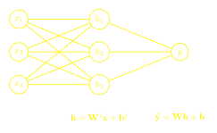Think of it as 3 + 1 linear regressions in parallel
Add another layer
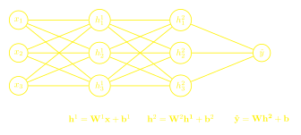Activation function on hidden layers
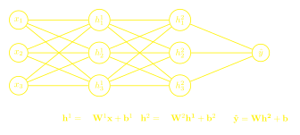Activation functions
   Why activation functions?
- Need to be non-linear
- Without: adding layers would not improve model
- Additional layers would 'collapse'
Because without activation function:
\(\hat{y} = Wh + b\)
\(h = W^1x + b^1\)
\(\Rightarrow \hat{y} = W(W^1x + b^1) + b = WW^1x + Wb^1 + b \)
\(\Rightarrow \hat{y} = \tilde Wx + \tilde b \)
Effectively one layer instead of two!
- Hidden layers: always use activation function
- Output layer: depends on use case, e.g.
- Real numbers (regression): no activation
- Real positive numbers: exp
- Probability (classification): sigmoid
Deep Neural Network (DNN)
Depth: number of layers
Width of layer: number of variables, nodes, neurons
Intuition: Piecewise linear

What is still missing?
- Model (✓): neural network architecture
- Loss: depends on problem
- Neural networks allow for any loss
- In contrast, most other machine learning methods hardwire the loss
- Advantage: as loss can be tailored to problem
- Training:
- Find weights \(\{W^i, b^i \}\) that minimize loss
- Uses Optimizer
Loss function examples
| Problem Type | Loss function | Description | Output activation |
|---|---|---|---|
| Regression |
Mean squared error \(\frac{1}{N}\sum_{i=1}^N(\hat y_i - y_i)^2\) |
\(y\): actual value \(\hat y\): predicted value |
No (identity) |
| Classification |
Binary cross entropy \(\frac{1}{N}\sum_{i=1}^N(y_i \log (\hat y_i)\) \(+ (1-y_i) \log (1-\hat y_i))\) |
\(y\): actual class \(\hat y\): predicted class probability |
Sigmoid |
Many more!
Neural network frameworks
- tensorflow, pytorch
- Implement architecture
- Define loss
- Do optimization
- Gradients: chain rule via back propagation algorithm
- Optimization with gradient descent
- Or generalizations (Adam, RMSprop, AdaDelta)
- Optimization over data batches (e.g., 32 samples)
Universal approximation theorem
"With four parameters I can fit an elephant, and with five I can make him wiggle his trunk."
John von
Neumann

Universal approximation theorem
A deep feedforward neural network with
- At least one hidden layer,
- Sufficiently large width and depth, and
- Non-linear activation functions (e.g., ReLU)
can approximate (almost) any function
Example

Sigmoid activation
- the model learns the training data too well
- capturing noise and details that don't generalize to unseen data
- Train - test split of data
- Good performance on training data but bad on test data
More data, early stopping, regularization, ...
Wrap up neural networks
Advantages- Can systematically benefit from more data
- Flexible: universal approximation theorem
- Loss function can be tailored to problem
- Computationally expensive for large models
- May be tedious to optmize (convergence)
- Need to specify architecture
Outlook
There are other types of neural networks
- Convolutional neural networks: images
- Transformers: sequence modelling (LLM)
- Recurrent neural networks: sequence modelling
Transfer learning
- Use (parts of) pretrained neural networks
- Reduce computational cost.